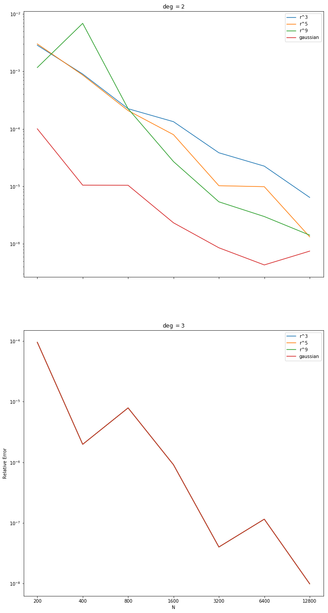

It has been obsereved that when using iterated differentiation to solve the problem $\Delta_\SS u = -20Y_{4,-3}$ on the unit sphere, if the degree of the basis terms is 5 (i.e. one higher than the degree of the forcing function) then the error is independent of the choice of RBF. We attempt to explain this behavior.
- Observation
- Hypothesis
- Results and Conclusion
- References
Observation
The two plots below show the error of our method using a variety of RBFs augmented with up to 2nd and 3rd degree polynomials respectively for the problem $\Delta_\SS u = -2(2+1)Y_{2,2}$. In the second plot, the errors seem to be independent of the choice of RBF. We susspected that this is due to the use of a second degree spherical harmonic and tested it by using $-4(4+1)Y_{4,-3}$ (not shown here), and indeed the error depended on the choice of RBF up to 5th degree terms. This seems to confirm our suspicion that the phenomenon is due to the particular form of the forcing term, but does not explain why it leads to error independent of the RBF?
Hypothesis
We expect that when we augment with terms up to one degree higher than the degree of the forcing function that our approximation to the surface gradient will be exact, and that error is comming from using iterated differentiation in the approximation of the surface laplacian. We can check this by evaluating $\begin{bmatrix} \mathcal{G}^x u(\vec{x})& \mathcal{G}^y u(\vec{x})& \mathcal{G}^zu(\vec{x}) \end{bmatrix}^T$ at a point, projecting onto the tangent plane, and directly comparing it to the surface gradient. We expect to find that the coefficients are exact for the computation of the gradient, but that error is introduced in the iterated differentiation step.
We test this hypothesis in this Jupyter Notebook which requires poly_basis.py.
Results and Conclusion
Our hypothesis was slightly wrong, though the reasoning was almost correct. The surface gradient is exact when we augment with polynomials up to the degree of the forcing term, but the surface laplacian is not exact. When we increase the degree of the augmented terms to one higher than the degree of the forcing term the surface laplacian is exact. The choice of RBF becomes irrelevant when our weights for the surface laplacian are exact for polynomials of the degree of our forcing term. The error is not being introduced by iterated differentiation.
References